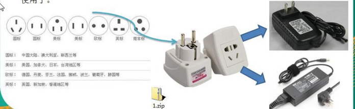
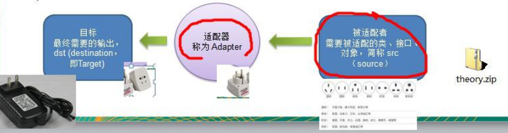
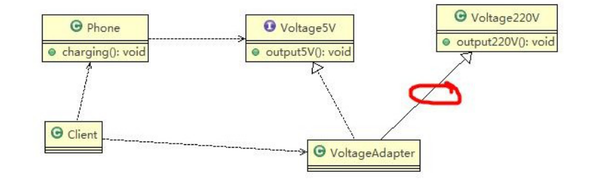
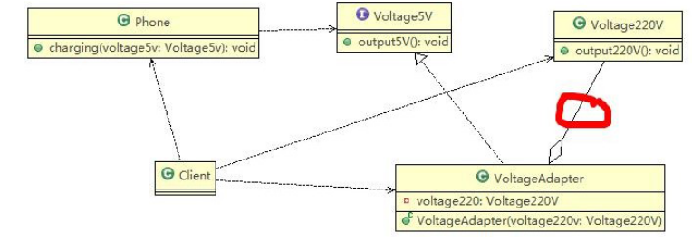
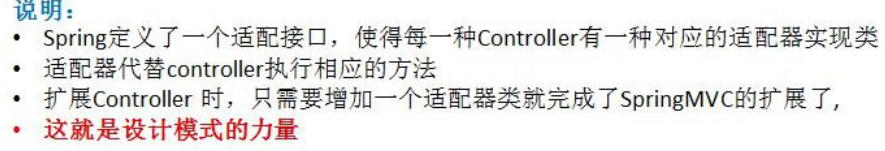
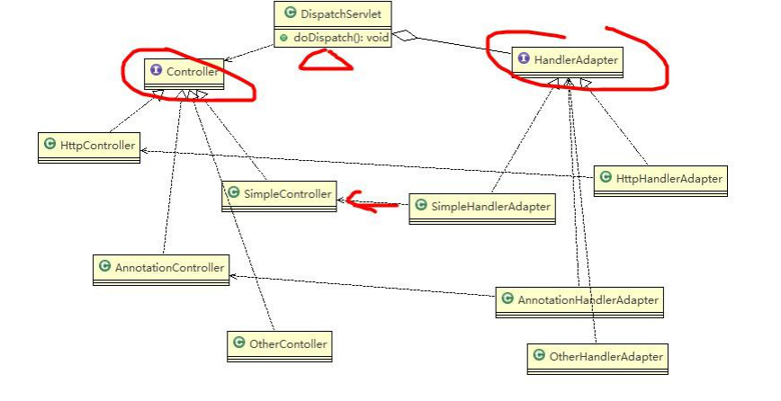

# 现实生活中的适配器例子
|  |
泰国插座用的是两孔的（欧标），可以买个多功能转换插头 (适配器) ，这样就可以使用了。
# 基本介绍
适配器模式 (Adapter Pattern) 将某个类的接口转换成客户端期望的另一个接口表示，主的目的是兼容性，让原本因接口不匹配不能一起工作的两个类可以协同工作。其别名为包装器 (Wrapper)
适配器模式属于结构型模式
主要分为三类：类适配器模式、对象适配器模式、接口适配器模式
# 工作原理
适配器模式：将一个类的接口转换成另一种接口。让原本接口不兼容的类可以兼容
从用户的角度看不到被适配者，是解耦的
用户调用适配器转化出来的目标接口方法，适配器再调用被适配者的相关接口方法
用户收到反馈结果，感觉只是和目标接口交互，如图

# 类适配器模式
# 类适配器模式介绍
🍿基本介绍：Adapter 类，通过继承 src 类，实现 dst 类接口，完成 src->dst 的适配。
# 类适配器模式应用实例
应用实例说明
以生活中充电器的例子来讲解适配器，充电器本身相当于 Adapter，220V 交流电相当于 src (即被适配者)，我们的目 dst (即 目标) 是 5V 直流电
思路分析 (类图)

- 代码实现
🎈Phone
public class Phone { | |
// 充电 | |
public void charging(Voltage5V iVoltage5V) { | |
if (iVoltage5V.output5V() == 5) { | |
System.out.println("电压为 5V, 可以充电~~"); | |
} else if (iVoltage5V.output5V() > 5) { | |
System.out.println("电压大于 5V, 不能充电~~"); | |
} | |
} | |
} |
🎆Voltage5V
public interface Voltage5V { | |
public int output5V(); | |
} |
🎇Voltage220V
public class Voltage220V { | |
// 输出 220V 的电压 | |
public int output220V() { | |
int src = 220; | |
System.out.println("电压=" + src + "伏"); | |
return src; | |
} | |
} |
🧨VoltageAdapter
public class VoltageAdapter extends Voltage220V implements Voltage5V { | |
public int output5V() { | |
// 获取到 220V 电压 | |
int srcV = output220V(); | |
int dstV = srcV / 44 ; // 转成 5v return dstV; | |
return dstV; | |
} | |
} |
✨Client
public class Client { | |
public static void main(String[] args) { | |
Phone phone = new Phone(); | |
phone.charging(new VoltageAdapter()); | |
} | |
} |
# 类适配器模式注意事项和细节
Java 是单继承机制，所以类适配器需要继承 src 类这一点算是一个缺点，因为这要求 dst 必须是接口，有一定局限性；
src 类的方法在 Adapter 中都会暴露出来，也增加了使用的成本。
由于其继承了 src 类，所以它可以根据需求重写 src 类的方法，使得 Adapter 的灵活性增强了。
# 对象适配器模式
# 对象适配器模式介绍
基本思路和类的适配器模式相同，只是将 Adapter 类作修改，不是继承 src 类，而是持有 src 类的实例，以解决兼容性的问题。 即：持有 src 类，实现 dst 类接口，完成 src->dst 的适配
根据 “合成复用原则”，在系统中尽量使用关联关系（聚合）来替代继承关系。
对象适配器模式是适配器模式常用的一种
# 对象适配器模式应用实例
应用实例说明
以生活中充电器的例子来讲解适配器，充电器本身相当于 Adapter，220V 交流电相当于 src (即被适配者)，我们的目 dst (即目标) 是 5V 直流电，使用对象适配器模式完成。
思路分析 (类图)：只需修改适配器即可，如下:

# 代码实现
只需要把类适配的类从继承改成聚合即可
public class VoltageAdapter implements Voltage5V { | |
private Voltage220V voltage220V; // 关联关系 - 聚合 | |
public VoltageAdapter(Voltage220V voltage220V) { | |
this.voltage220V = voltage220V; | |
} | |
public int output5V() { | |
// 获取到 220V 电压 | |
int srcV = voltage220V.output220V(); | |
int dstV = srcV / 44 ; // 转成 5v return dstV; | |
return dstV; | |
} | |
} |
public class Client { | |
public static void main(String[] args) { | |
Phone phone = new Phone(); | |
phone.charging(new VoltageAdapter(new Voltage220V())); | |
} | |
} | |
// 输出 | |
电压=220伏 | |
电压为 5V, 可以充电~~ |
# 对象适配器模式注意事项和细节
对象适配器和类适配器其实算是同一种思想，只不过实现方式不同。根据合成复用原则，使用组合替代继承， 所以它解决了类适配器必须继承 src 的局限性问题，也不再要求 dst 必须是接口。
使用成本更低，更灵活。
# 接口适配器模式
# 接口适配器模式介绍
- 一些书籍称为：适配器模式 (Default Adapter Pattern) 或缺省适配器模式。
- 核心思路：当不需要全部实现接口提供的方法时，可先设计一个抽象类实现接口，并为该接口中每个方法提供一个默认实现（空方法），那么该抽象类的子类可有选择地覆盖父类的某些方法来实现需求
- 适用于一个接口不想使用其所有的方法的情况。
代码
public interface InterfaceMethod { | |
void m1(); | |
void m2(); | |
void m3(); | |
void m4(); | |
void m5(); | |
} | |
public class MethodAdapter implements InterfaceMethod { | |
public void m1() { | |
} | |
public void m2() { | |
} | |
public void m3() { | |
} | |
public void m4() { | |
} | |
public void m5() { | |
} | |
} | |
class UseMethod extends MethodAdapter { | |
// 重写自己想写的方法 | |
@Override | |
public void m1() { | |
super.m1(); | |
} | |
@Override | |
public void m2() { | |
super.m2(); | |
} | |
@Override | |
public void m3() { | |
super.m3(); | |
} | |
} |
# 适配器模式在 SpringMVC 框架应用的源码剖析
动手写 SpringMVC 通过适配器设计模式获取到对应的 Controller 的源码


代码
package com.wxf.design.adapter.sourceexample; | |
import java.util.ArrayList; | |
import java.util.List; | |
/** | |
* @author WangXuefeng | |
* @version 1.0 | |
* @date 2021/6/7 20:16 | |
* @description | |
*/ | |
public class Dispatcher { | |
private List<ControllerAdapter> adapters = new ArrayList<ControllerAdapter>(); | |
public Dispatcher() { | |
adapters.add(new SimpleControllerAdapter()); | |
adapters.add(new HttpControllerAdapter()); | |
adapters.add(new AnnotationControllerAdapter()); | |
} | |
public void dispatch(){ | |
Controller httpController = new AnnotationController(); | |
ControllerAdapter adapter = getAdapter(httpController); | |
adapter.handle(httpController); | |
} | |
public ControllerAdapter getAdapter(Controller controller){ | |
for (ControllerAdapter adapter : adapters) { | |
if(adapter.support(controller)){ | |
return adapter; | |
} | |
} | |
return null; | |
} | |
} | |
class Client { | |
public static void main(String[] args) { | |
new Dispatcher().dispatch(); | |
} | |
} |
package com.wxf.design.adapter.sourceexample; | |
/** | |
* @author WangXuefeng | |
* @version 1.0 | |
* @date 2021/6/7 20:11 | |
* @description | |
*/ | |
public interface Controller { | |
} | |
class HttpController implements Controller { | |
public void httpHandler(){ | |
System.out.println("http..."); | |
} | |
} | |
class SimpleController implements Controller { | |
public void simpleHandler(){ | |
System.out.println("simple..."); | |
} | |
} | |
class AnnotationController implements Controller { | |
public void annotation(){ | |
System.out.println("annotation..."); | |
} | |
} |
package com.wxf.design.adapter.sourceexample; | |
/** | |
* @author WangXuefeng | |
* @version 1.0 | |
* @date 2021/6/7 20:15 | |
* @description | |
*/ | |
public interface ControllerAdapter { | |
void handle(Object obj); | |
boolean support(Object obj); | |
} | |
class HttpControllerAdapter implements ControllerAdapter { | |
public void handle(Object obj) { | |
((HttpController)obj).httpHandler(); | |
} | |
public boolean support(Object obj) { | |
return (obj instanceof HttpController); | |
} | |
} | |
class SimpleControllerAdapter implements ControllerAdapter { | |
public void handle(Object obj) { | |
((SimpleController)obj).simpleHandler(); | |
} | |
public boolean support(Object obj) { | |
return (obj instanceof SimpleController); | |
} | |
} | |
class AnnotationControllerAdapter implements ControllerAdapter { | |
public void handle(Object obj) { | |
((AnnotationController)obj).annotation(); | |
} | |
public boolean support(Object obj) { | |
return (obj instanceof AnnotationController); | |
} | |
} |
# 适配器模式的注意事项和细节
三种命名方式，是根据 src 是以怎样的形式给到 Adapter（在 Adapter 里的形式）来命名的。
类适配器：以类给到，在 Adapter 里，就是将 src 当做类，继承对象适配器：以对象给到，在 Adapter 里，将 src 作为一个对象，持有接口适配器：以接口给到，在 Adapter 里，将 src 作为一个接口，实现
Adapter 模式最大的作用还是将原本不兼容的接口融合在一起工作。
实际开发中，实现起来不拘泥于我们讲解的三种经典形式